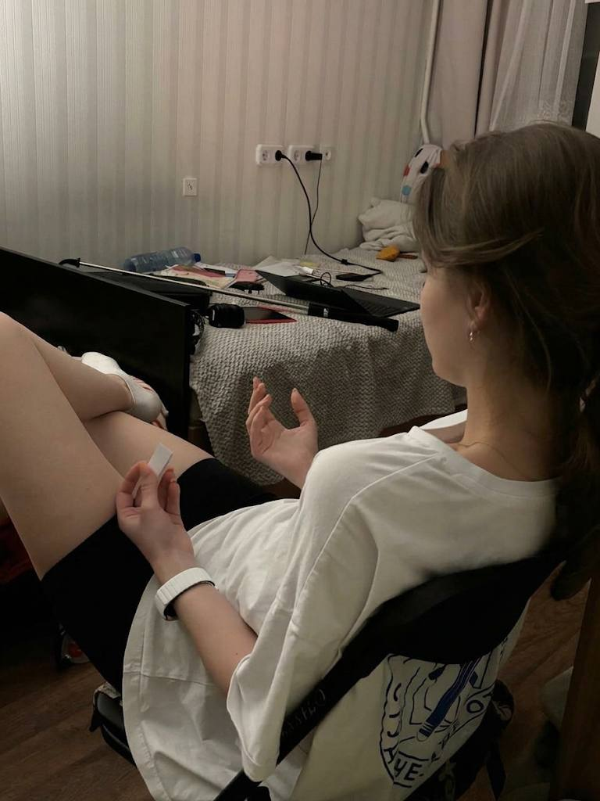
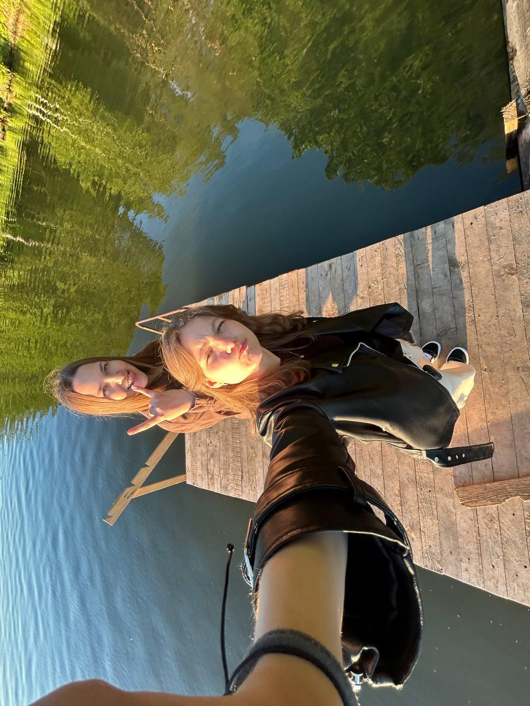
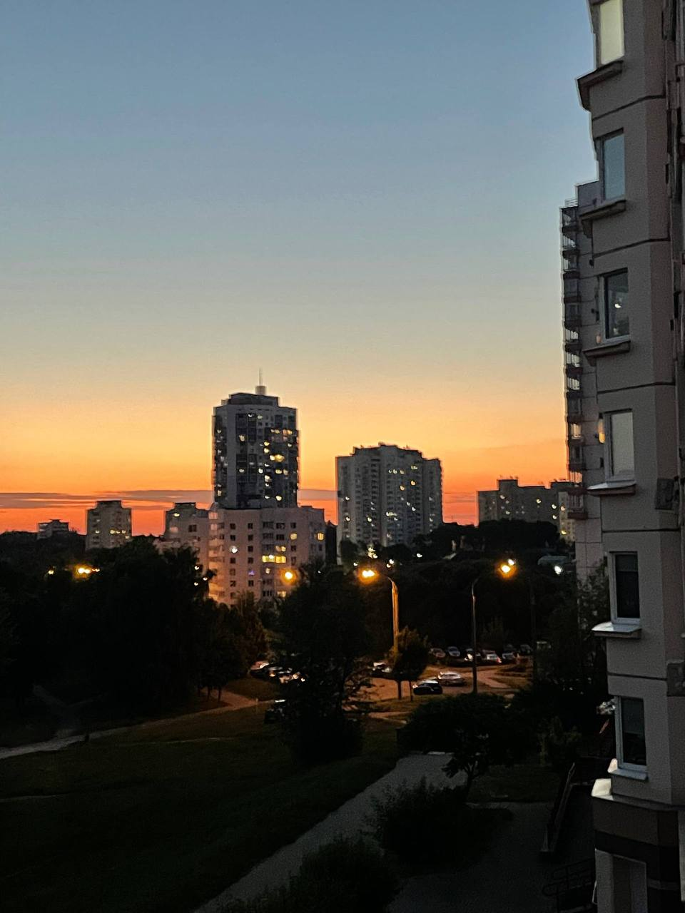

Chapter 01
06 / 2026
June — Начало Сессия и первые прогулки
Месяц, когда всё началось с учебников, а закончилось свободой.
Июнь — это конспекты до утра, экзамены, волнение и бесконечное повторение. Но между подготовкой находились короткие прогулки по городу, которые помогали не сойти с ума. Именно эти паузы и запомнились больше всего.
01

02

03
